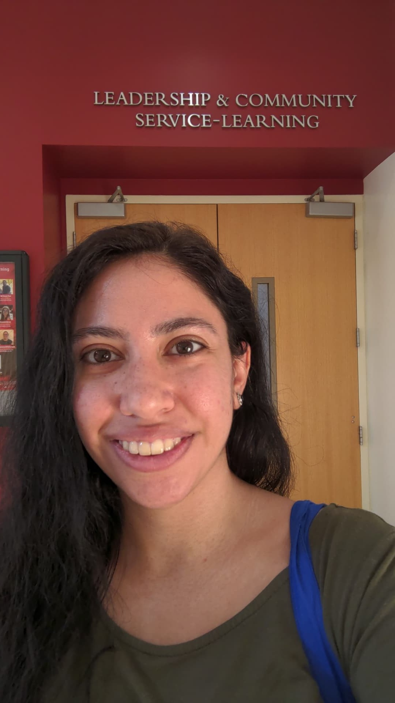

Hi! 👋 Welcome to my portfolio, where I will be documenting my UX/HCI career.

I am currently a student at the University of Michigan School of Information, pursing a Master's degree in User Experience and Human Computer Interaction. I have a work background in volunteer management and community advocacy and a bachelor's in Anthropology. After seeing how the right platform can change how I do my work and how I managed my volunteer program, I decided to pursue a graduate degree in UX because I want create technologies that work in all settings. It has been rewarding to use my anthropological skills and community experience to think beyond the tech bubble. Technology that provides utility and enhances people's lives is tech that makes sense. Anything less than that just won't do. Information and technology have a lot of power to create, design, and lead our futures. I want to create the future, but a carefully crafted one, built on transparency, accessibility, and positive impact.
My hobbies include baking (I make a mean blueberry muffin!), traveling, taking care of my house plants, and
hanging out with my roommate's cat. I am passionate about civic engagement and try to volunteer in my
community often. I also think it's important to get fresh air (yes, even in the winter!), so you can catch
me going on runs in my neighborhood in Ann Arbor.
I am currently seeking a full time internship for the summer months with the possibility of continuation
upon graduation.